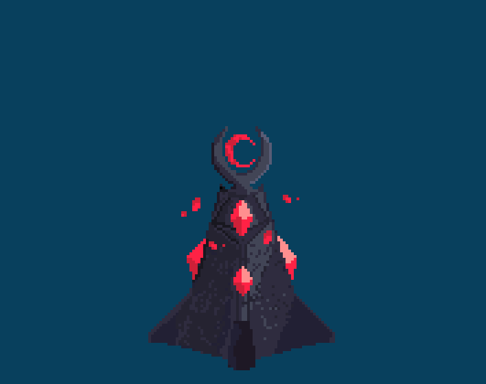

Get to the blood moon tower!
Dont fall! You will die!
Kill or avoid Reapers!
Jump
Hint: To achieve longest jump, press W
after running off platform
Move left
Move right
Attack
Hint: To attack, hold space until spikes appear!